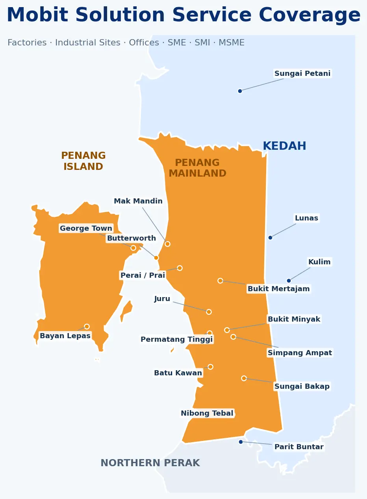

SERVICE COVERAGE
Built for business.
Ready for your site.
Local IT, networking, Wi-Fi, CCTV and building-security support for factories, industrial sites, offices and SME, SMI and MSME commercial premises across Penang and nearby areas.
BUSINESSES WE SUPPORT
From factory floor to commercial front door.

MAIN SME · SMI · MSME COVERAGE
Penang Mainland business corridor
Mak Mandin · Perai/Prai · Butterworth · Bukit Mertajam · Juru · Bukit Minyak · Permatang Tinggi · Batu Kawan · Simpang Ampat · Nibong Tebal · Sungai Bakap
Island industrial & business areas
Bayan Lepas Industrial Zone · Bayan Baru · George Town · Gelugor · Jelutong · Tanjung Tokong · Air Itam · Balik Pulau and nearby locations.
Mainland industrial & commercial areas
Mak Mandin Industrial Area · Perai/Prai Industrial Area · Butterworth · Bukit Mertajam · Juru · Bukit Minyak · Permatang Tinggi · Batu Kawan · Simpang Ampat · Nibong Tebal · Sungai Bakap and nearby SME, SMI and MSME locations.
Kulim industrial & business areas
Kulim Hi-Tech Park · Kulim · Lunas · Padang Serai · Sungai Petani and selected nearby industrial and commercial locations.
Parit Buntar area
Parit Buntar · Nibong Tebal border areas and selected nearby business locations.
Outside these areas? Contact Mobit Solution to check availability. Site visits depend on the project type, location and schedule.